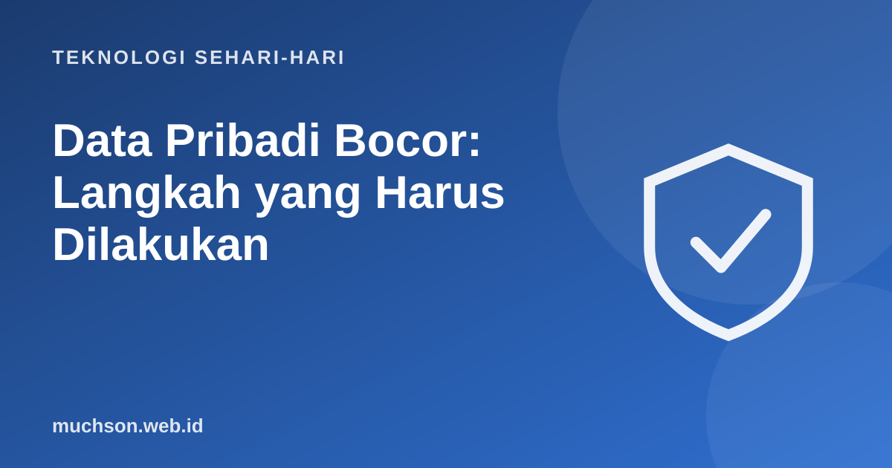

Beranda › Artikel › Teknologi Sehari-hari
Teknologi Sehari-hariData Pribadi Bocor: Langkah yang Harus Dilakukan
Berita kebocoran data muncul berkali-kali: nama, NIK, nomor HP, email, bahkan alamat. Kita tidak bisa menarik kembali data yang sudah bocor. Yang bisa dilakukan adalah memperkecil dampaknya: mengamankan akun penting dan mewaspadai penipuan yang memanfaatkan data itu.

Kenapa data bocor berbahaya?
Data bocor jarang dipakai sendirian. Penipu menggabungkannya untuk membuat penipuan terdengar meyakinkan: "Bapak Budi, nasabah bank X dengan NIK 35xx, akun Anda akan diblokir..." Data yang tepat membuat korban percaya. Kebocoran kata sandi lebih berbahaya lagi karena bisa langsung dipakai mencoba masuk ke akun lain (credential stuffing).
| Data yang bocor | Risiko utama |
|---|---|
| Email dan kata sandi | Akun diambil alih, terutama bila kata sandi dipakai ulang |
| Nomor HP | Spam, telepon penipuan, upaya mengambil alih WhatsApp |
| NIK dan KK | Penyalahgunaan identitas, misalnya pendaftaran layanan tanpa izin |
| Alamat dan tanggal lahir | Penipuan yang terdengar meyakinkan |
| Data rekening atau kartu | Transaksi tidak sah |
Cek apakah email Anda pernah bocor
Situs Have I Been Pwned (haveibeenpwned.com), dikelola peneliti keamanan Troy Hunt, mengumpulkan data kebocoran publik. Masukkan email Anda untuk melihat kebocoran mana yang memuatnya. Beberapa pengelola kata sandi dan peramban juga punya fitur pemeriksaan kata sandi yang bocor.
Hasil "tidak ditemukan" tidak menjamin data Anda aman, karena tidak semua kebocoran terdata. Tetap terapkan langkah pencegahan.
Langkah prioritas
Waspada penipuan lanjutan
Hak Anda menurut UU PDP
Indonesia memiliki Undang-Undang Nomor 27 Tahun 2022 tentang Pelindungan Data Pribadi (UU PDP). Undang-undang ini mengatur hak subjek data (Anda) dan kewajiban pengendali data (perusahaan atau lembaga yang menyimpan data). Di antaranya, pengendali data wajib menjaga keamanan data dan memberi pemberitahuan bila terjadi kegagalan pelindungan data pribadi. Sebagai subjek data, Anda punya hak antara lain mendapat informasi tentang pemrosesan data, mengakses dan memperbaiki data, serta menuntut ganti rugi atas pelanggaran sesuai ketentuan.
Bila Anda menerima pemberitahuan kebocoran dari sebuah layanan, baca isinya dengan teliti: data apa yang bocor, kapan, dan langkah apa yang disarankan. Simpan pemberitahuan itu sebagai bukti.
Kebiasaan untuk mengurangi dampak kebocoran berikutnya
- Kata sandi unik di setiap akun. Satu kebocoran tidak membuka akun lain.
- Bagikan data seperlunya. Jangan unggah foto KTP sembarangan; beri tanda air bila harus mengirim.
- Pisahkan email untuk akun penting dan untuk pendaftaran promo.
- Hapus akun lama yang tidak dipakai lagi.
Tanya jawab
Bagaimana cara mengecek apakah data saya bocor?
Apa yang pertama dilakukan saat data bocor?
Apakah NIK yang bocor bisa disalahgunakan?
Apa itu UU PDP?
Sumber dan bacaan lanjut
- UU Nomor 27 Tahun 2022 tentang Pelindungan Data Pribadi (JDIH BPK)
- Have I Been Pwned
- OJK Indonesia Anti-Scam Centre